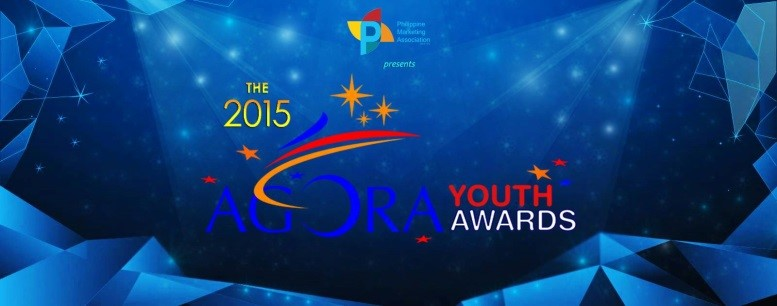
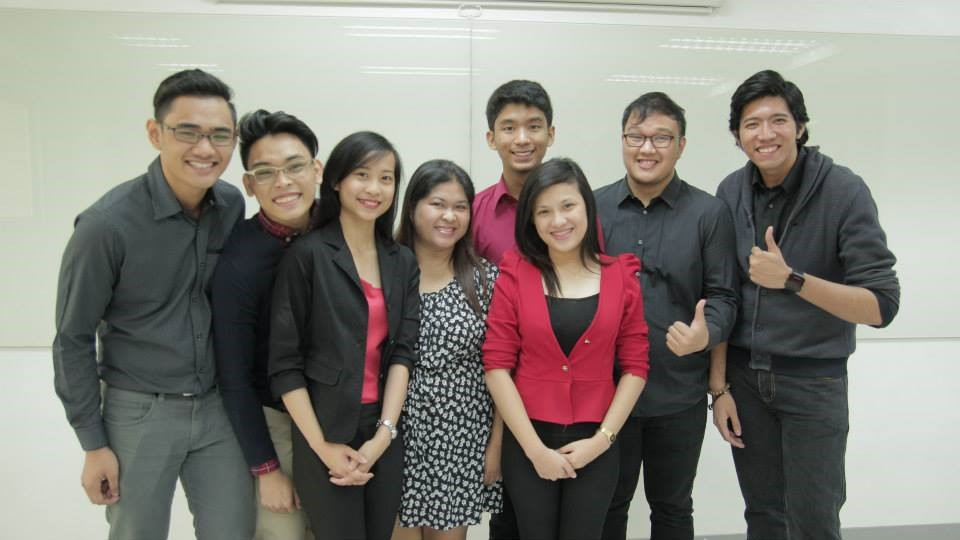
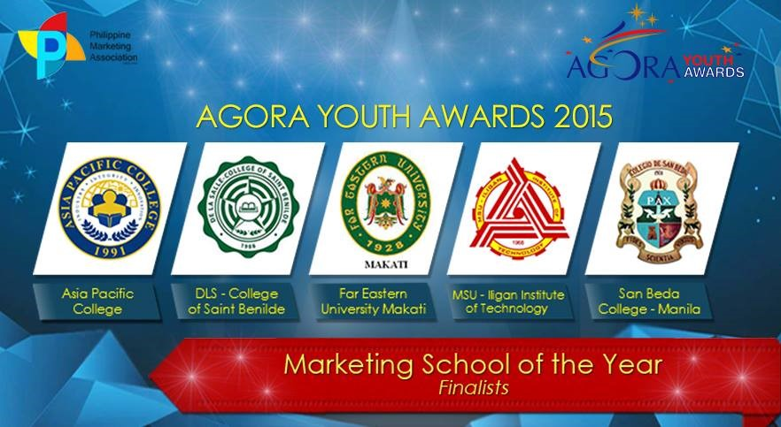
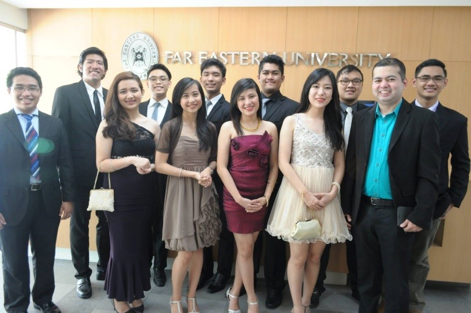
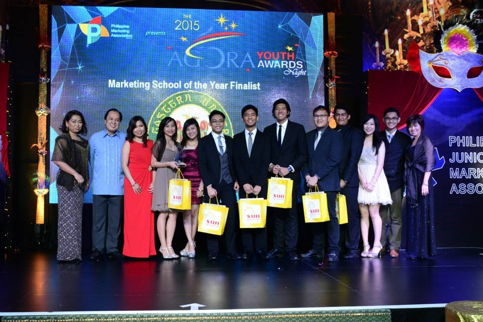

GHELA MAE DARLINGTON VILLAFUERTE
Projects





Agora Youth Awards 2015
To be a part of this prestigious contest is such a wonderful experience. I have learned bunch of interesting things and creative insights as we tackle and work on the challenge given to us. All the hard work and sleepless nights finally paid off. I thank all of my mentors, my teammates, my co presenters, my family and my friends who supported us in the best way they can. With that, we started to believe that we can be anything and to think that it really is possible to reach our goal. I am so lucky to be chosen as one of the 4 presenters to represent Far Eastern University Makati and it 's my pleasure. It 's amazing how we became one of the finalists for the Marketing School of the Year out of a hundred schools competing. This is one of the achievements I 'll take in my future and will pretty much take a look back. Thank you FEU Makati and AGORA YOUTH AWARDS 2015.